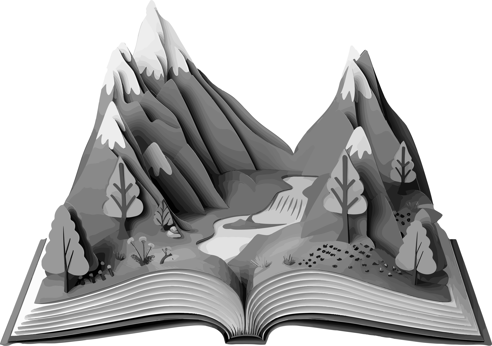
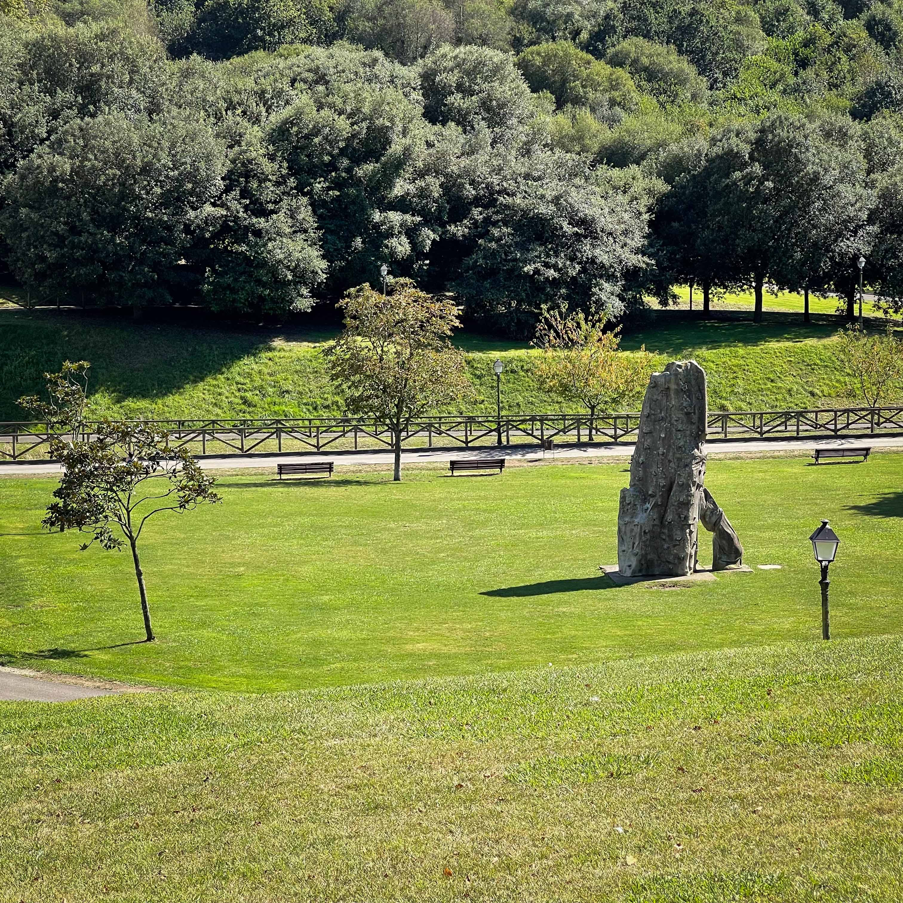
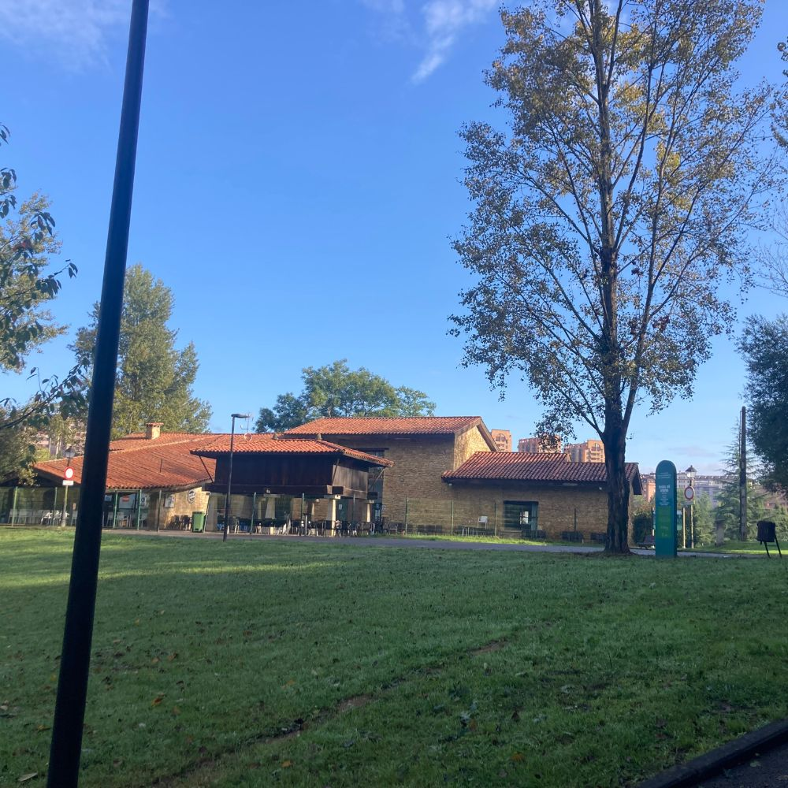
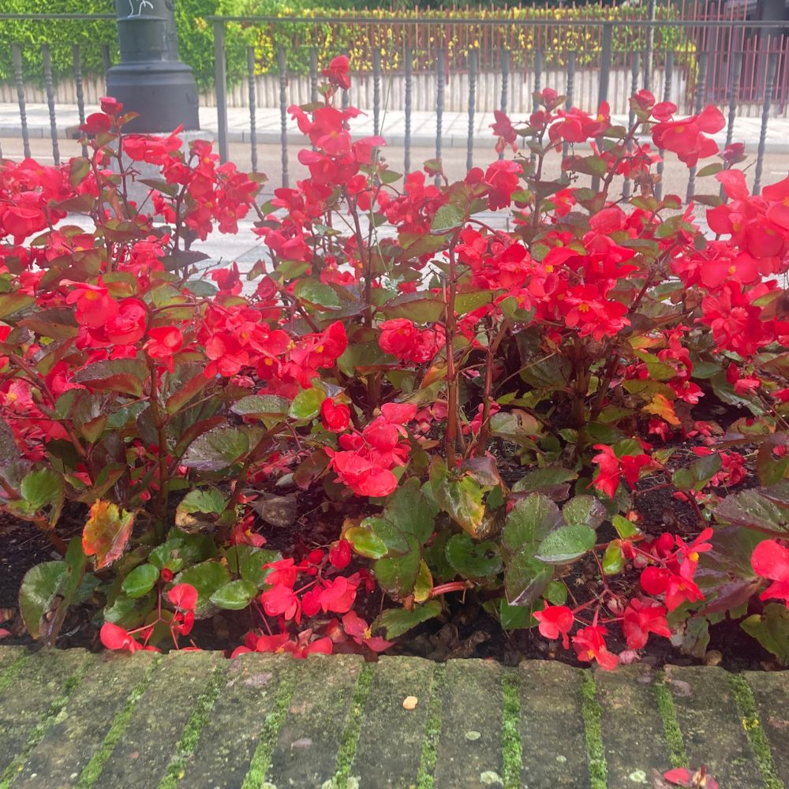
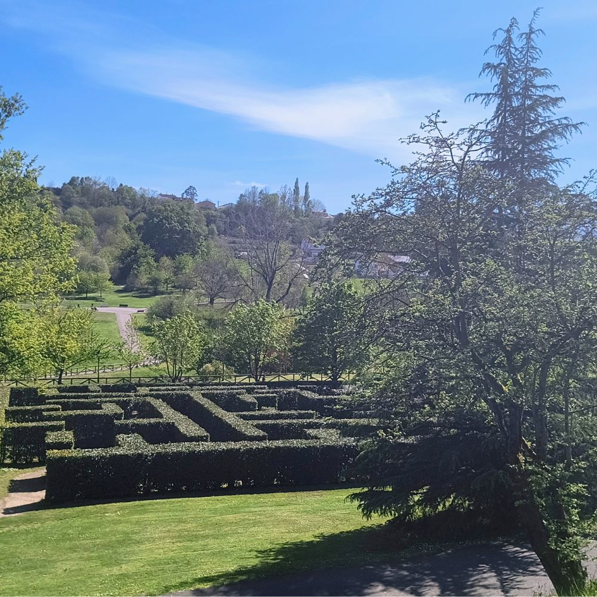

Vídeo del parque que ofrece una vista panorámica de 360º desde el punto de grabación.
Vídeo del parque con vista en 360º
Espacio natural en la ciudad.
.png) Parque de Invierno
Parque de Invierno
Con sus 171.368 metros
cuadrados, esta situado en el barrio de San Lázaro.
En él podrás encontrar| Naturaleza | Deporte |
Bienestar.
Su más atractivo es un laberinto formado por más de 600 árboles de
laurel.

Pulmón verde.
Aventura y Serenidad en un Solo Lugar.
Oasis verde.
.png) Naturaleza y ocio en armonía.
Naturaleza y ocio en armonía.
Es un extenso espacio verde muy versátil, donde se puede disfrutar de la naturaleza, hacer
ejercicio, jugar y relajarse, todo en un entorno hermoso y bien cuidado.
Además, el parque ofrece vistas panorámicas de la sierra del Aramo.
Naturaleza
 Donde la Naturaleza y
Donde la Naturaleza y
El parque se encuentra en una vaguada natural, delimitada por la Autovía A-66 y la sierra del Aramo. Fue diseñado para ofrecer un espacio verde amplio y multifuncional, con áreas para el deporte,
el ocio y la relajación. El parque es el punto de inicio de la Senda Verde que va a Fuso de la Reina, una ruta popular para el senderismo que sigue la antigua vía del ferrocarril junto al río Gafo.
Parque de Invierno

la Diversión se encuentranEl parque alberga una rica variedad de flora y fauna, lo que lo convierte en un refugio natural dentro de la ciudad. Cuenta con una diversidad de especies arbóreas y arbustivas.
La fauna no es muy visible, pero se pueden encontrar diversas especies de aves y pequeños mamíferos. La vegetación densa y variada proporciona un hábitat adecuado para insectos.

La flora
DEL PARQUE DE INVIERNO



Originalmente, esta zona era una escombrera, pero gracias a la rehabilitación urbana se transformó
en un hermoso parque y un verdadero refugio natural.
Este parque ha sido sede de varios eventos impactantes a lo largo de los años. Estos eventos han
contribuido a hacer del parque, un lugar vibrante y lleno de vida.
En la naturaleza.
.png) Tradición y Diversión.
Tradición y Diversión.
El Parque de Invierno ha sido sede de varios eventos impactantes a lo largo de los años, por
ejemplo:
- Conciertos al aire libre Durante los meses de verano y en las fiestas de "San
Mateo".
- Eventos deportivos Se organizan torneos y competiciones de ping-pong, skate y
ciclismo.
- Actividades infantiles El Palacio de los Niños ha organizado numerosos
cumpleaños, visitas escolares y campamentos infantiles.

Parque de Invierno
Para una tarde de picnic

Parque de Invierno
Despertar de la primavera

Parque de Invierno
Al cobijo de una sombra

Parque de Invierno
Una tarde de juegos

Parque de Invierno
Una parada en el camino
"Espacio verde en la ciudad...
.png) CONOCE EL PARQUE DE INVIERNO"
CONOCE EL PARQUE DE INVIERNO"
Podemos ver y disfrutar de las zonas verdes que hay en el parque toda la familia, ya que cuenta con servicios para poder visitarlo y devido al gran crecimiento de la ciudad está completamente integrado.
Espacio natural en la ciudad.
.png) Parque de Invierno.
Parque de Invierno.
San Lázaro es un barrio dinámico y moderno, pero conserva su rica historia como la iglesia de San Lázaro del Camino, se encuentra en el corazón del barrio y es conocido por su proximidad al Camino de Santiago, lo que lo convierte en un punto de paso importante para los peregrinos.
En este barrio se encuentra la institución sanitaria más antigua de Asturias, en el que se acogían a ancianos y enfermos desamparados.
En este mismo emplazamiento ya existía un hospital de leprosos. A este edificio se llamaba "La Malatería" (a estos se les llamaba "malatos"), en un primer momento era conocida como "Santa María de Cervielles", hasta que en el año 1235 aparece bajo la advocación de San Lázaro. Estos topónimos cohexisten hasta principios del siglo XVI y a partir de aqui se comienza a llamar con el apelativo "San Lázaro".
Para desconectar de la rutina diaria y pasar un momento de diversión
En este parque encontrarás diferentes formas de entretenimiento en cualquier época del año.
Se puede realizar la senda del "Fuso de la Reina" tanto a pie como en bicicleta, te puedes perder en el laberinto, realizar circuitos deportivos en los diferentes aparatos de deporte entre otras actividades.
Sobre Nosotros
Somos un equipo de desarrolladores web dedicados a crear experiencias únicas.
Nos
esforzamos por transformar la visita a los parques por excelencia de Oviedo en experiencias
digitales visualmente atractivas, intuitivas y fáciles de usar.
© Copyright 2024.
Todos lo derechos reservados.